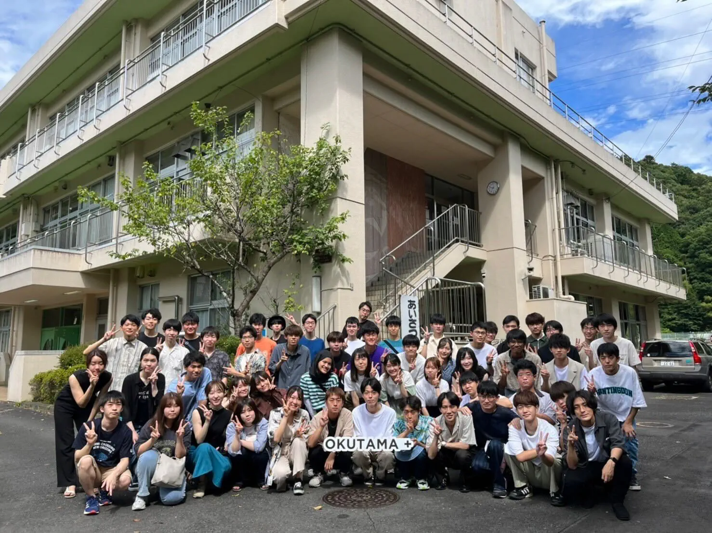

TPGでは班、学院、学年を超えた交流を目指し、組活動というものを行っています。班活動のように決まった時間に決まった活動をするのではありません。組活動の目的は、ただ仲良くなるだけ！です。
組のメンバーは毎クォーター変わり、一回約1時間活動します。組活動ではボードゲームをやったり、大岡山周辺のパン屋さん巡りをしたり、東京タワーを見に行ったり、組によってバラバラです！やりたいことがあれば、ぜひ組活動の仲間に気軽に提案してみましょう！クォーターの試験期間が終わり休みの日には、組同士で遊びに行ったりもします。
組活動は任意参加でありますが、普段の活動メンバーを越えた繋がりは普段の活動の上でも重要な役割を果たしています。とっても楽しい活動が待っています。ぜひ参加してください！

夏になるとTPGでは合宿を行っています。2022年度は奥多摩の廃校をリモデリングしたおしゃれな場所で開催しました。2泊3日の間BBQパーティー、肝試し、ビンゴ大会、カレー作りなどを通してメンバー同士の仲を深めました！リーダーと副リーダー、そしてマネジメント班の方々がTPGのみんなを思い企画してくれました。
楽しくないはずがない！そんな合宿でございます。みなさんもTPGの合宿で楽しい夏の思い出を作りましょう！
TPGのマネジメント班ではTPG全体が仲良く活動できるよう、全体懇親会と学年ごとの懇親会を企画しています。ここで自分の班以外の人とも交流を深める事ができます。特に学年ごとの懇親会は同期と仲良くなれるチャンスです！
全体懇親会はお台場でピクニックをしたり、ボウリング大会をしたり様々です。マネジメント班のメンバーが一生懸命考えて企画していて、いつも楽しい懇親会が開催されます！
2023年の春には謎解き企画に参加しました。夏には運動会をやるとか…？！
書いた遊び以外にも、個人的に遊びに行きたいところがあれば人を集めて行くこともあります。このように仕事も遊びも頑張ってるTPGですので、TPGのメンバーは自然に仲良くなっていきます！
最近ではTaki Plaza
B2Fのキッチンスペースで料理企画をするメンバーもいるとか…？！みなさんもTPGに入り、大学生活を楽しみましょう！